Java 2 Micro Edition (J2ME) combines a resource-constrained JVM and a set of Java APIs for developing applications for mobile devices. This article is the first in a series. This time, after a quick introduction to J2ME, I will provide a step-by-step guide to creating J2ME applications, also known as MIDlets, using a simple example. This will cover how to test and deploy these MIDlets as well. Finally, I will round out this installment with a look at the lifecycle of a MIDlet.
What is J2ME? Cut away the hype and the excess fat and you are left with yet another (set of) Java APIs. Since these APIs cannot run on a traditional Java Virtual Machine (JVM), due to the limited size of mobile devices in regards to memory and resource availability, J2ME defines a limited version of the JVM as well. In a nutshell:
J2ME combines a resource constrained JVM and a set of Java APIs for developing applications for mobile devices.
Do you, as a developer, have to install this JVM and the APIs on mobile devices? No. Device manufacturers install and prepackage their devices with this JVM (and associated APIs). As a developer, you only need to develop applications targeting these devices and install them. Easier said than done!
J2ME can be divided into three parts, as shown in Figure 1: a configuration, a profile, and optional packages. A configuration contains the JVM (not the traditional JVM, but the cut-down version) and some class libraries; a profile builds on top of these base class libraries by providing a useful set of APIs; and optional packages, are well, an optional set of APIs that you may or may not use when creating your applications. Optional packages are traditionally not packaged by the device manufacturers, and you have to package and distribute them with your application. The configuration and profile are supplied by the device manufacturers and they embedded them in the devices.
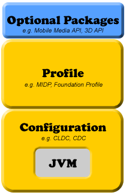
Figure 1. The J2ME stack
The most popular profile and configuration that Sun provides are the Mobile Information Device Profile (MIDP) and Connected Limited Device Configuration (CLDC), respectively. As the name suggests, CLDC is for devices with limited configurations; for example, devices that have only 128 to 512KB of memory available for Java applications. Consequently, the JVM that it provides is very limited and supports only a small number of traditional Java classes. (This limited JVM is actually called the KVM.) Its counterpart, the Connected Device Configuration (CDC) is for devices with at least 2MB of memory available and supports a more feature-rich JVM (but still not a standard JVM).
The MID profile complements the CLDC configuration very well because it minimizes
both the memory and power required for limited devices. It provides the basic
API that is used for creating application for these devices. For example, it
provides the javax.microedition.lcdui package that allows us to
create the GUI elements that can be shown on a (limited) device running the
MID profile on top of a CLDC configuration. Note that MIDP cannot be used with
CDC devices. CDC devices get their own set of profiles, like the Foundation
and Personal profiles. However, I will not cover these profiles or the CDC here,
and will concentrate on using MIDP and CLDC only.
The latest versions of MIDP and CLDC are 2.0 and 1.1, respectively. Not many devices currently support these versions, but the list is growing rapidly. Sun maintains a list of devices according to version.
Getting started with developing applications (henceforth called "MIDlets") for the J2ME platform is easy. Although device manufacturers install and prepackage their devices with this JVM (and associated APIs), you still need to install the J2ME Wireless Toolkit 2.2 on your development machine. Before that, however, you must also have the Java Development Kit (JDK), version 1.4.2 or greater, installed.
Warning: I had problems getting the Wireless Toolkit to work properly with JDK 5.0. If you don't need the latest features in version 5.0, it is best to stick to any 1.4.2 version. I have used 1.4.2_05 for all examples in this series.
You need this Toolkit because it contains tools that are important in generating MIDlets. This Toolkit provides the development environment for the MIDP 2.0 and CLDC 1.1 (and for MIDP 1.0 and CLDC 1.0, since these parameters are backwards compatible), and it provides the optional packages required for the optional libraries, like 3D and Mobile Media applications. Lastly, it provides the ability to sign your MIDlets so that they can be authenticated before installation on a remote mobile device.
Once you download the installation package for the Toolkit, install it in the directory of your choice. The default, on Windows, is C:\WTK22, and this will be the installation directory for the examples in this series as well. I will not explain the directories created under this folder just now. Before I do that, let us try and understand the process of generating a MIDlet from scratch.
|
There are seven steps in the creation of a MIDlet. These steps are: designing, coding, compiling, preverification, packaging, testing, and deployment. Some of these steps are not strictly MIDlet-centric (for example, every application needs to be designed, coded, and compiled), but we will cover them here because there are MIDlet-centric differences. The Toolkit abstracts a lot of these steps so that it is easier for you in the overall scheme of things. This is fine and dandy once you know the process, but when you are only starting out, you really should be coding by hand, rather than using a sugar-coated abstraction.
To ensure that we get a hands-on understanding of these steps, let us take the help of a simple example. We will create a MIDlet that, when executed, will print the current date and time on a mobile device for a short time. Along with this in mind, keep Figure 2 handy to understand the sequence of these steps. Also, note that I will explain the lifecycle of MIDlets later. For the moment, let's get a simple MIDlet up and running, which will illustrate these steps.
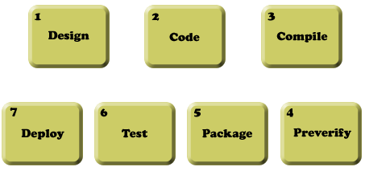
Figure 2. Steps to MIDlet creation
MIDlets are different from other applications that you may have created, simply because MIDlets run in an environment that is very different. There are several issues, not just those that are most visible (for example, the interactivity of your MIDlet with the user), but others that impact its usability.
For the example application, our Date-Time MIDlet does not need user interactivity. It needs to display the current date and time for a few seconds when the user executes the MIDlet. For simple cases like this, it is perhaps sufficient to mimic the design of the MIDlet by drawing it on a piece of paper. For more complex designs with multiple screens, it is best to design the screens professionally before starting the actual coding process.
Each MIDlet must extend the abstract MIDlet class found in the
javax.microedition.midlet package, much like creating an applet
by extending the java.applet.Applet class. At the minimum, your
MIDlet must override three methods of this abstract class, startApp(),
pauseApp(), and destroyApp(boolean unconditional).
Here is the DateTimeApp class:
package com.j2me.part1;
import java.util.Date;
import javax.microedition.lcdui.Alert;
import javax.microedition.lcdui.Display;
import javax.microedition.midlet.MIDlet;
public class DateTimeApp extends MIDlet {
Alert timeAlert;
public DateTimeApp() {
timeAlert = new Alert("Alert!");
timeAlert.setString(new Date().toString());
}
public void startApp() {
Display.getDisplay(this).setCurrent(timeAlert);
}
public void pauseApp() {
}
public void destroyApp(boolean unconditional) {
}
}
In this example, DateTimeApp's constructor creates the element that is
necessary to display the time on a device's screen and the startApp
method does the actual task of displaying this element. Don't worry if you don't
understand how the Alert element works, or when the constructor
or the other methods are called. I will cover the former in the next part, when
we look at the GUI elements of MIDP 2.0, and the latter later in this article
in the MIDlet Lifecycle section.
Copy this code into a file called DateTimeApp.java and save it in a folder that mimics its package structure (com\j2me\part1). You can save it anywhere you want on your machine; as far as this article is concerned, we will save it in the folder C:\WTK22\article\com\j2me\part1.
With this simple code in place, you now need to know how to compile it so that
it is ready for mobile devices. Compiling MIDlets is not very much different
from compiling normal Java applications. You still use javac as the compiler,
except you need to change the boot CLASSPATH while compiling MIDlets. This has
the effect of changing the base Java classes that the Java compiler uses to
compile your MIDlet against, thereby ensuring that compilation is targeted towards
the narrow set of Java's APIs for the J2ME platform. So instead of compiling
against the java.lang.Date in "normal" Java, you actually want compilation
done for J2ME's java.lang.Date. This is done by pointing to the CLDC and MIDP classes
for javac's -bootclasspath option while compiling.
This is shown below for the DateTimeApp MIDlet compilation. To do this compilation,
make sure you that you enter the command by navigating to the directory C:\WTK22\article
via the command prompt.
C:\WTK22\article>javac -bootclasspath ..\lib\cldcapi11.jar;..\lib\midpapi20.jar
com\j2me\part1\DateTimeApp.java
Notice that I have done the compilation against the CLDC API's 1.1 and MIDP
API's 2.0 versions, respectively, by including these libraries in the bootclasspath
option. I could have done the compilation against other versions if it was required,
by simply pointing to their respective libraries.
Before you can deploy your MIDlet class, it needs to be preverified. Verification of byte code is a step performed by the JVM before it runs any class file to ensure that the class file is structurally and conceptually correct as per the JVM specification. If the class file fails this check, it is rejected and the JVM shuts down, indicating either security or integrity violation of the class file. This verification is done by all JVMs, even the tiny JVM contained in a CLDC configuration for a J2ME device. Although this is not a problem for "normal" applications, verification in J2ME devices is a resource and memory constraint that they simply cannot handle (or should not handle). Therefore, the need for preverification.
Preverification is one part of a special two-step verification process, especially designed for constrained devices, such as the ones running CLDC-based JVMs. The idea is to let a developer preverify his classes, which limits the amount of work needed to be performed when the classes are verified in the device. This preverification process adds special information to the classes that identifies them as preverified and makes the process on the device much more efficient.
Keeping this in mind, preverify your Date-Time MIDlet. The Wireless Toolkit comes with a preverification tool in the bin folder of its installation (C:\WTK22\bin). The following command, when executed from C:\WTK22\article, will preverify the DateTimeApp.class created in the previous step.
C:\WTK22\article>..\bin\preverify.exe -classpath ..\lib\cldcapi11.jar;..\lib\midpapi20.jar
com.j2me.part1.DateTimeApp
By default, the preverifier will create the preverified version of your
DateTimeApp.class file in a folder called output in the current directory. It
will preserve the package structure, so your preverified class will now be in
the folder C:\WTK22\article\output\com\j2me\part1\. You can, of course, point
the output to another folder, using the -d option for the preverify tool, but
for the moment, use the default output folder.
Packaging your MIDlet so that it ready for testing and deployment is a fairly involved process, with several steps. Although each step is straightforward, they must be followed in proper sequence.
The first step is to create a Manifest file. This Manifest file describes the contents of the Java Archive (JAR) file that we will be creating in the next step. There are several attributes that can go in this file, but for your Date-Time MIDlet, stick to only the ones that are required. This file's contents are shown here:
MIDlet-Name: DateTimeApp
MIDlet-Version: 1.0.0
MIDlet-Vendor: Vikram Goyal
Save this file as Manifest.mf in the C:\WTK22\article\output folder. (Note
the newline after the last attribute, MIDlet-Vendor. It must be present, otherwise
this attribute will not be recognized.)
Next, create the JAR file that packages up the preverified DateTimeApp.class file and the Manifest file. To create this JAR file, navigate to the C:\WTK22\article\output directory and issue the following command:
C:\WTK22\article\output>jar cvfm DateTimeApp.jar Manifest.mf .\com
This will create the DateTimeApp.jar file in the current (C:\WTK22\article\output) folder.
The second-to-last step is to create a file that has an extension of .jad. A Java Application Descriptor (JAD) file points to the location of the MIDlet it describes so that a J2ME device can install it. Again, this file can contain several attributes for a single MIDlet (or for several MIDlets), but for your Date-Time MIDlet, you will stick with the ones that are required.
MIDlet-1: DateTimeApp, , com.j2me.part1.DateTimeApp
MIDlet-Name: DateTimeApp
MIDlet-Version: 1.0.0
MIDlet-Vendor: Vikram Goyal
MIDlet-Jar-URL: DateTimeApp.jar
MIDlet-Jar-Size:
MicroEdition-Profile: MIDP-2.0
MicroEdition-Configuration: CLDC-1.1
Save this file as DateTimeApp.jad in the same folder as the JAR file (C:\WTK22\article\output).
I will explain the attributes in this file later, but for now, note that the
value of the MIDlet-Jar-Size attribute is missing. This missing
value brings you to the last step of the packaging step, where you determine
the size of the DateTimeApp.jar file, and put that value in this JAD file, in
actual bytes. It is very important to get this exactly right, as the installation
of this MIDlet will fail if this value is different from the actual size. On
my machine, this value is 1469 bytes, and therefore, this is what this attribute
looks like on my machine:
MIDlet-Jar-Size: 1469
This completes the packaging part. Well, actually, there are other steps in the packaging that I could talk about (for example, signing and obfuscation), but to keep things simple, I will leave those steps for later discussion. For now, you will move on to testing of your MIDlet.
Before deploying your MIDlets, they must be tested by using a base common emulator device that mimics the functionality of an actual device on your computer. This emulator is part of the Wireless Toolkit and provides functionality that is sure to be present in the majority of devices for which the MIDlet is targeted. This emulator is present in the bin folder of the Toolkit.
From the output directory created in the preverify step earlier, and where we now have a packaged MIDlet in the form of JAR and JAD files, issue the following command to run the emulator with this JAD file as an option.
C:\WTK22\article\output>..\..\bin\emulator.exe -Xdescriptor DateTimeApp.jad
You should see the emulator pop up on your screen as shown in Figure 3, with the DateTimeApp MIDlet selected. If it doesn't, the most likely error at this point would be incorrect JAR size information. Make sure you have the exact size listed in the JAD file.
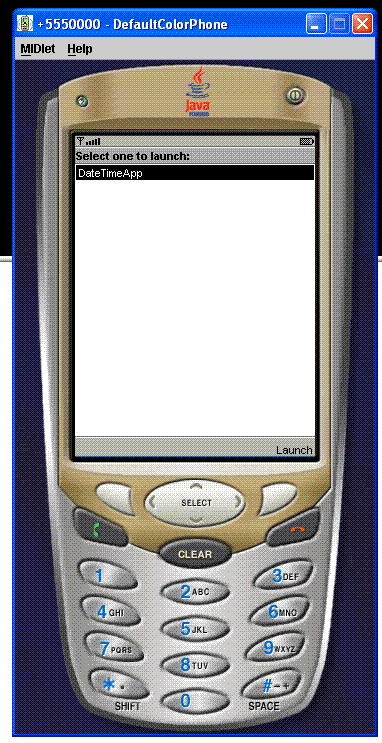
Figure 3. Testing the DateTimeApp
At the lower right-hand corner of the emulated device's screen, you can see the "Launch" menu item listed. The emulator has installed the MIDlet and is ready to launch it. Click on the phone button just underneath that menu item and the MIDlet should display the current date time for a few seconds and then disappear. Note that the MIDlet is still running even after the date and time disappear, because in code, you did not destroy it.
This is it! Now you have reached the stage where you can deploy the MIDlet directly on your mobile device. There are two ways to do this. The first is via a network connection between your computer and your handset. This can either be via a USB cable or a Bluetooth wireless connection, depending on your device. Most Java-enabled devices will allow you to install J2ME applications via this connection.
Second, and the one that is more interesting, because it opens up your MIDlet to the outside world, is via the Internet. After all, what good is your MIDlet if the rest of the world cannot see it? Of course, this means that your device should be able to connect to the Internet using its internal browser.
Before you proceed further, recall that when you created the JAD file, you entered two attributes in it that specified the version of CLDC (1.1) and MIDP (2.0) for which the MIDlet was created. Since the DateTimeApp MIDlet does not use any of the features of these versions, it should theoretically run on devices that support the lower versions of these attributes, as well. Therefore, the DateTimeApp MIDlet should run on CLDC 1.0 and MIDP 1.0, but because the JAD file restricts these versions to the newer ones, devices will fail to install this MIDlet if they do not support these new versions. If this is the case with your device, fear not! As I said before, because we are not using any MIDP-2.0- or CLDC-1.1-specific features, you can simply change these version numbers in the JAD file, and this will be sufficient to install this device on all Java-enabled devices. If this is the case with your device, or the device that you are going to test this MIDlet on, simply change these values in the JAD file and you are good to go.
To be able to deploy your MIDlet via the Internet, you need to have access to a web server with a real-world IP address or domain name. You also need to have administrative privileges to be able to modify the configuration files of your web server to add some Multipurpose Internet Mail Exchange (MIME) types for the JAD and JAR extensions. If you are using Jakarta/Tomcat as your web server, you don't need to do this, as it already has these MIME types. For the Apache web server, modify the mime.types file and add the following extension types.
text/vnd.sun.j2me.app-descriptor jad
application/java-archive jar
By adding these MIME types, you are informing the browser, or any client accessing these files from the server, how to handle these files when they are downloaded into the device.
Next, create an HTML file that will become the point of reference. Strictly, this is not necessary, because a device that can access an HTML page can also access a JAD file. But an HTML page provides a point of reference, and therefore, let's create one for your Date-Time MIDlet. The HTML doesn't need to be anything fancy. Don't forget that users will be accessing this page via a mobile device, so it is prudent to keep the size of this page to the minimum. This is shown in Listing 2.
<HTML>
Click <a href="DateTimeApp.jad">here</a> to download DateTimeApp MIDlet!
</HTML>Listing 2. DateTimeApp.html page for accessing the DateTimeApp MIDlet
The page provides a link to the JAD file, and the JAD file provides a link
to the associated JAR file via the MIDlet-Jar-URL: DateTimeApp.jar
attribute. However, since this is now going to be accessed via a web server
over the Internet, it is advisable to make this link absolute instead of relative.
(The behavior of relative URLs is inconsistent as far as MIDlet access is concerned.)
Since I am going to serve this MIDlet via a web site (Craftbits.com)
I manage, I have modified this link to an absolute URL using this web site.
MIDlet-Jar-URL: http://www.craftbits.com/j2me/DateTimeApp.jar
You will, of course, need to change this URL to your own domain.
Finally, upload the modified JAD file, the newly created HTML file, and the original JAR file to your web server to a directory location where you will be able to navigate to the HTML page via your mobile device browser. Now, anyone with a mobile device that can browse the Internet should be able to point to your DateTimeApp.html file and download, install, and run the DateTimeApp MIDlet.
For those who don't have access to a web server, I have uploaded these files to my web server. Simply point to http://www.craftbits.com/j2me/DateTimeApp.html through your device and you will be able to see this MIDlet in action.
That's it! You have completed all the steps required to manually create and deploy a MIDlet. This process has helped you to understand what goes on behind the scenes and given you confidence in all the steps of MIDlet creation. Because a lot of these steps are repetitive, it makes sense to use an automated tool. This is where the Wireless Toolkit comes in, and you will use it to create the rest of the MIDlets in this article series. For the moment, let's recreate the same MIDlet using this Toolkit so that you can get familiar with its interface.
|
In the section Acquiring and Installing J2ME Development Kit above, you downloaded the Toolkit and installed it in the folder C:\WTK22 (as far as this article series is concerned; you may have downloaded and installed it in a different folder). Let's explore the contents of this folder. Figure 4 shows these contents as they should now look on your machine.
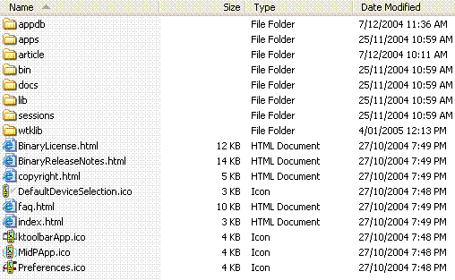
Figure 4. Wireless Toolkit folder contents
Note that the default installation of the Toolkit would not have created the article folder, and that you created it in the previous section.
As far as a MIDlet developer is concerned, the most important folders are the apps and bin folders, but here is a short summary of each of these folders.
| Folder Name | Folder Description |
| appdb | Directory that acts as a simulation for mobile device file system |
| apps | MIDlets created using the Toolkit reside in this directory |
| bin | Contains executables for the various tools, including the Toolkit itself, and various other tools like the preverifier and the emulator |
| docs | The Wireless Toolkit documentation including API documentation for MIDP 2.0 and MIDP 1.1 |
| lib | Contains the JAR files for MIDP (both 2.0 and 1.1), CLDC (both 1.1 and 1.0) and several other optional libraries |
| sessions | Directory where network and profiling sessions are maintained |
| wtklib | Contains the libraries for the Toolkit itself, including the properties of various device emulators |
The apps folder is the directory where all the MIDlets that are created using the Toolkit are installed. Browse this folder, and you will notice several example MIDlets provided in their own folders. These have their own directory structure that allows clean separation of source code, libraries, and rest of the files associated with a MIDlet project.
The bin folder contains the executables for the Toolkit. The most
important one is ktoolbar.exe (on Windows), which starts the main interface
window for the Toolkit. This folder contains other executables as well, some
of which we came across earlier (for example, preverify.exe and emulator.exe).
Let us, however, concentrate on using the Toolkit now by running the ktoolbar.exe from the bin folder. The Toolkit will start and you will get the window
shown in Figure 5.
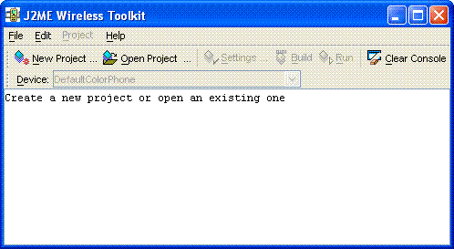
Figure 5. Main Toolkit window
As the message in the window says, from here, you can either create a new project or open an existing one. When you click on the Open Project menu button, you will be presented with a list of projects. As you may have guessed, this list of projects is the directory listing of the apps folder. Selecting a project from this list will open up the project and allow you to change its settings, build it (which includes compilation, preverification, and packaging) and run it. The steps of designing and coding are still to be done outside of this Toolkit.
Let's use the Toolkit to create the Date-Time MIDlet from the previous section. Click on New Project menu button, and enter the details in the window that comes up, as shown in Figure 6.
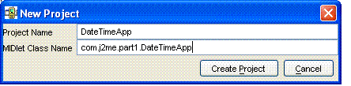
Figure 6. Creating a new project
The next window that comes up will allow you to change settings that control the target platform of your MIDlet. In this case, you want to target this MIDlet towards the MIDP 2.0 and CLDC 1.1 platforms and therefore, keep the Target Platform as JTWI, which preselects the MIDP 2.0 Profile. However, you will need to change the Configuration to CLDC 1.1 and uncheck the Optional Mobile Media API library, as shown in Figure 7.
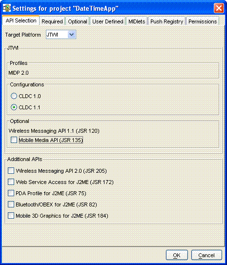
Figure 7. Changing project settings
You can review the rest of the settings by clicking on the tabs at the top, but for the moment, your project is ready to be created. Do so by clicking the OK button at the bottom. The project will be created with information about where to place the project files displayed on the screen, as shown in Figure 8. You can verify that the Toolkit has created a DateTimeApp folder under the apps folder by navigating to it.
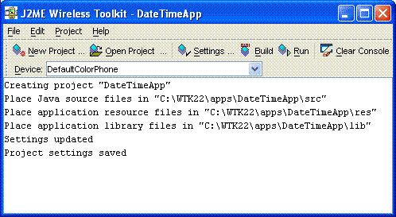
Figure 8. Project DateTimeApp created
You have already created the only required src file for this MIDlet in the previous section. Copy this file, DateTimeApp.java, from the folder C:\WTK22\article\com\j2me\part1\ to the fully qualified src folder (C:\WTK22\apps\DateTimeApp\src\com\j2me\part1). Note that the Toolkit created the fully qualified path based on the package name, so you don't have to. Once the copy is done, come back to the Toolkit, and hit the Run menu button. The Toolkit will compile, preverify, and package, and, provided everything goes OK, will run the DateTimeApp in the emulator. Seems simple enough, doesn't it? All you had to do was to create a new project, set the settings, write the code, drop it in the right directory, and hit the Run button. The Toolkit took care of the rest.
Before you leave this section, examine the rest of the folders under the DateTimeApp project. The bin folder under the DateTimeApp folder contains the JAD and the Manifest files, while the classes folder contains compiled classes. But where is the JAR file for this MIDlet? Well, the JAR file is not created by just running (or building) your application in the Toolkit. To create the JAR file, you will need to select the Project menu item, and then select one of the options under the Package submenu, as shown in Figure 9.
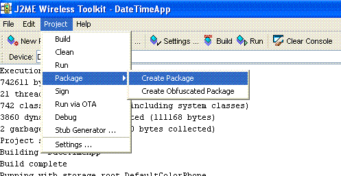
Figure 9. Creating the MIDlet's JAR file
By creating this package, the JAR file will be created, with correct Manifest information in the JAD file. You can even create the HTML file that we created in the deploy section previously, by clicking on the Run via OTA (Over The Air) menu. This will not only allow you to simulate your emulator running this MIDlet via the Internet, but also create the HTML file for you in the bin folder. Before you can use this HTML file to deploy on your own server, along with the JAD and the JAR files, you will need to change the hostname, which defaults to "localhost."
You now know how to create a simple MIDlet, both using the Toolkit, and without it. It's now time to look at the MIDlet lifecycle to understand what actually happens when your MIDlet is deployed and run.
Mobile devices, whether emulators or real, interact with a MIDlet using their
own software, which is called Application Management Software (AMS). The AMS
is responsible for initializing, starting, pausing, resuming, and destroying
a MIDlet. (Besides these services, AMS may be responsible for installing and
removing a MIDlet, as well.) To facilitate this management, a MIDlet can be in
one of three states which is controlled via the MIDlet class methods,
that every MIDlet extends and overrides. These states are active, paused and
destroyed.
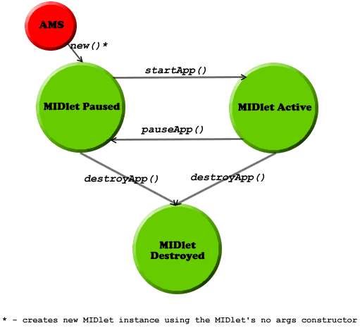
Figure 10. The possible states of a MIDlet and the transition between them
As you can see from Figure 11, an installed MIDlet is put into a paused
state by the AMS creating an instance of it, by calling its no-args constructor.
This is of course, not the only way that the MIDlet can be in a paused
state. It can enter this state when the AMS calls the pauseApp()
method on an active MIDlet (and the method returns successfully).
It can also enter this state when the MIDlet pauses itself by calling the notifyPaused()
method, as opposed to the pauseApp() method, which is called by
the AMS. However, what exactly is happening with the MIDlet in the paused
state?
In a paused state, the MIDlet is waiting for a chance to get into
the active state. Theoretically, in this state, it should not be
holding or using any of the device resources and should be passive in nature.
Once the MIDlet is created, this is the state to be in before becoming active.
Also, entering the paused state is necessary when the device requires
it to consume fewer resources, because these resources may be required for handling
other device functions, like handling an incoming call. This is when the device
invokes the pauseApp() method through the AMS. If the MIDlet should
inform the AMS that it has paused, it should invoke the notifyPaused()
method, which tells the AMS that the MIDlet has indeed paused.
One final way in which a MIDlet can get into a paused state is
when the MIDlet's startApp() method, which is called when the AMS
invokes it to start the MIDlet (either the first time or from a paused
state), throws a MIDletStateChangeException. Essentially, in case of an error,
the MIDlet takes the safe road of staying in the paused state.
The active state is where every MIDlet wants to be! This is when
the MIDlet can do its functions, hold the device resources and generally, do
what it is supposed to do. As said previously, a MIDlet is in an active
state when the AMS calls the startApp() method on a paused
MIDlet (actually, the MIDlet enters the active state just before
this method is called by the AMS). A paused MIDlet can request to
go into the active state by calling the method resumeRequest(),
which informs the AMS that the MIDlet wishes to become active. The
AMS may of course, choose to ignore this request or, alternatively, queue it
if there are other MIDlets requesting the same.
The destroyed state is entered when a MIDlet's destroyApp(boolean
unconditional) method is called and returns successfully, either from
an active or paused state. This method is called by
the AMS when it feels that there is no need for the MIDlet to keep running and
is the place the MIDlet may perform cleanup and other last minute activities.
The MIDlet can enter this state itself, by calling the notifyDestroyed()
method, which informs the AMS that the MIDlet has cleaned up its resources
and is eligible for destruction. Of course, since in this case, the destroyApp(boolean
unconditional) method is not called by the AMS, any last-minute activities
must be done before this method is invoked.
What happens if the AMS calls the destroyApp(boolean unconditional)
method in the middle of an important step that the MIDlet may be doing, and
may be loath to be destroyed? This is where the Boolean unconditional
flag comes into the picture. If this flag is set to true, the MIDlet will be
destroyed, irrespective of what the MIDlet is doing. However, if this flag is
false, effectively, the AMS is telling the MIDlet that it wants the MIDlet to
be destroyed, but if the MIDlet is doing something important, it can raise a
MIDletStateChangeException, and the AMS will not destroy it just
yet. However, note that even then, there are no guarantees that the MIDlet will
not be destroyed, and it remains up to each device to decide how they should handle
the request. If the device does honor the MIDlet's request, it may try and invoke
the destroyApp(boolean unconditional) at a later stage.
Note that a destroyed state means that the MIDlet instance has been destroyed, but not uninstalled from the device. The MIDlet remains installed in the device, and a new instance of it may be created later.
Let me end this section, and this article, with a flow chart of a typical sequence of events while using the DateTimeApp MIDlet that we created in the previous sections, and the corresponding AMS actions and MIDlet states. This flow chart is shown in Figure 11.
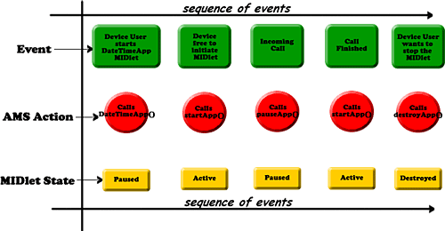
Figure 11. AMS actions and MIDlet states through a sequence of events
In the next part of this series, you will start creating useful MIDlets by understanding the User Interface API of MIDP 2.0. This will allow you to create powerful user interfaces, a key requirement for any MIDlet.
Vikram Goyal is a serious Java lover with over eight years of experience.
|